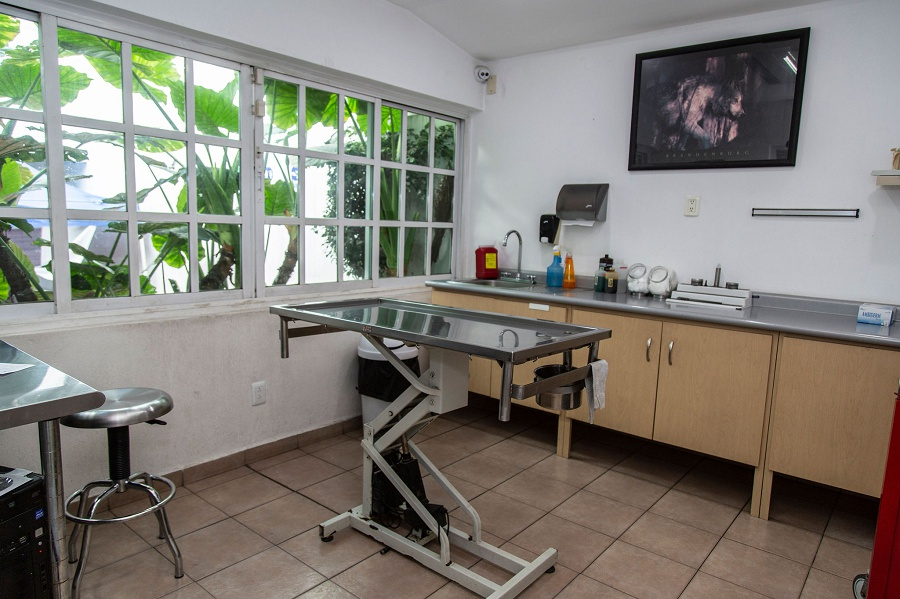
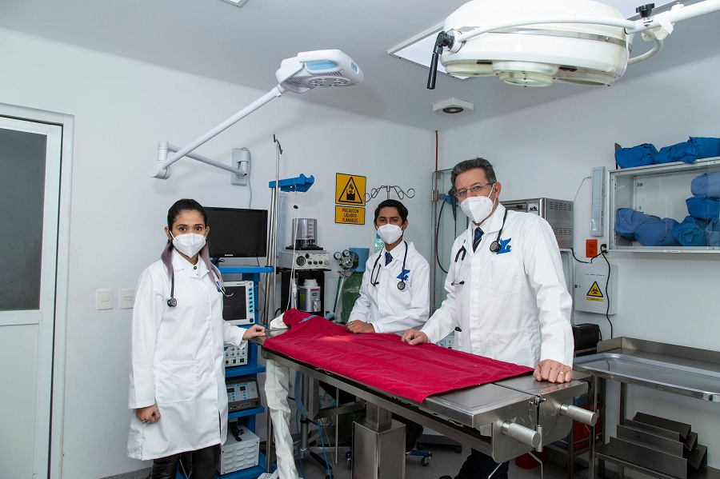
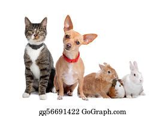

CLINICA VETERINARIA CACHORRITOS
En la Clínica Veterinaria Cachorritos contamos con excelentes programas de medicina preventiva como es la aplicación de vacunas para perros, gatos y hurones de los laboratorios más reconocidos y con los distribuidores del ramo que se han destacado por el mantenimiento de la cadena fría para que los biológicos al ser aplicados a su mascota se encuentren en perfectas condiciones. También contamos con el chequeo geriátrico el cual recomendamos para perros de talla miniatura a partir de los 9 años de edad, los perros de talla media a partir de los 7 años y los de talla gigante como el gran danés o san bernardo a partir de los 6 años, en estos chequeos podemos detectar enfermedades antes de la presentación de los signos clínicos y comenzar una estrategia para que nuestros amigos tengan una vida más larga y de mejor calidad.
Misión
Proporcionar servicios integrales de la más alta calidad para las mascotas a través de sistemas preventivos, emergentes y de medicina interna para así mejorar la salud de las personas incrementando la relación Humano-Animal.
Visión
Contar con un Hospital Veterinario de Especialidades único en la zona, con sucursales que abarquen toda el área metropolitana, satisfaciendo la necesidad de servicios veterinarios para personas que buscan trato profesional y especializado.
Consulta
La Clínica Veterinaria Cachorritos cuenta con médicos veterinarios expertos en diferentes disciplinas y con la metodología necesaria para llegar a los diagnósticos que permitirán enfocar los tratamientos de manera eficiente y oportuna, seguimos a detalle el expediente clínico orientado a problemas, en el que al conjuntar los datos generales, la historia clínica y el examen clínico podemos arrojar la lista de problemas que nos permitirá agrupar los signos de acuerdo a problemas específicos y recomendar las pruebas de laboratorio e imageniología complementarias.